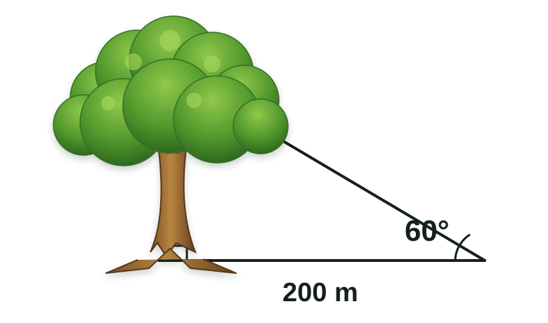

A continuación se presentan los problemas para la actividad “Momento de aprender”.
Las preguntas permanecen siempre visibles. Debajo de cada una encontrarás dos botones: uno muestra la resolución directa y otro abre la explicación detallada. Puedes volver a pulsarlos para cerrar el contenido.
01
Álgebra
Resolución formal y justificada de una ecuación cuadrática con términos fraccionarios, radicales y decimales periódicos
Resolver la siguiente ecuación para la variable \(D\):
Para resolver este problema debemos conocer los siguientes conceptos:
A
Número decimal periódico. Es un número decimal en el que una o más cifras se repiten infinitamente. Por ejemplo, \(0.\overline{6}\) tiene al dígito 6 como periodo.
B
Conversión de decimal periódico a fracción. Todo número decimal periódico puede expresarse como una fracción. En particular: \[0.\overline{6}=\frac{2}{3}.\]
C
Raíz cuadrada. Para un número real no negativo \(a\), se define \(\sqrt a\) como el número no negativo que al elevarse al cuadrado da \(a\). Ejemplo: \(\sqrt4=2\).
D
Propiedad distributiva. Si un factor multiplica a una expresión con suma o resta, debe multiplicar a cada término dentro del paréntesis. Ejemplo: \(k(a-b)=ka-kb\).
E
Homogeneización de denominadores. Para sumar o restar fracciones, se deben expresar con el mismo denominador.
F
Ecuación cuadrática. Una ecuación de la forma \(ax^2=b\) puede resolverse dividiendo entre \(a\) y aplicando raíces cuadradas.
G
Extracción de raíz cuadrada. Si \(x^2=k\), entonces \(x=\pm\sqrt{k}\).
El problema se reduce a una ecuación cuadrática elemental. Tras las simplificaciones sucesivas, obtenemos que los valores de \(D\) que satisfacen la igualdad son:
\[D=1\quad\text{o}\quad D=-1.\]
02
Geometría
Verificación sobrenatural mediante áreas geométricas
Lee el contexto y responde la pregunta.
Contexto
Un día, al salir el sol, en un campo de cultivo circular unos granjeros notaron que el maíz había sido aplastado formando un triángulo, como se muestra en la siguiente figura.
La región verde representa el área dentro del círculo que queda fuera del triángulo.
Un grupo de expertos en lo sobrenatural afirmó que podría tratarse de un trabajo alienígena y que, para confirmarlo, debían calcular el área dentro del círculo que quedaba fuera del triángulo (área verde). Según estos expertos, si dicha área superaba los 200 metros cuadrados, entonces se trataría de un fenómeno alienígena.
Los granjeros pasaron todo el día midiendo y determinaron lo siguiente:
La base del triángulo mide 8 metros.
Su altura mide 13 metros.
El radio del círculo es de 10 metros.
Pregunta
¿Lo ocurrido en el cultivo se trata de un trabajo alienígena según los expertos?
Para resolver este problema debemos conocer los siguientes conceptos:
A
Círculo. Es la región del plano limitada por una circunferencia. Está definido por todos los puntos que se encuentran a una distancia menor o igual al radio respecto al centro.
B
Triángulo. Es un polígono de tres lados. El área de un triángulo puede calcularse si se conoce la medida de su base y de su altura.
C
Número pi (\(\pi\)). Es una constante matemática que representa la razón entre la longitud de una circunferencia y su diámetro. Su valor aproximado es \(3.14159\).
D
Fórmula del área de un círculo. El área se obtiene mediante: \[A_{\text{círculo}}=\pi r^2.\]
E
Fórmula del área de un triángulo. El área se obtiene mediante: \[A_{\text{triángulo}}=\frac{1}{2}\cdot\text{base}\cdot\text{altura}.\]
F
Resta de áreas. Si se tienen dos figuras y se desea calcular el área de la parte que queda fuera de una de ellas pero dentro de la otra, se debe restar el área menor al área mayor.
G
Proposición lógica de la forma “si... entonces...”. En lógica matemática, una proposición condicional establece que si se cumple cierta condición, entonces se sigue una consecuencia. En este caso:
Si el área fuera del triángulo es mayor a 200, entonces se trata de un trabajo alienígena.
Desarrollo de la solución
Paso 1. Calcular el área del círculo (usando A y D).
Sabemos que el radio del círculo es \(r=10\text{ m}\). Aplicamos la fórmula:
Se establece la condición: si el área es mayor a 200, entonces el fenómeno es considerado alienígena. Como:
\[262.16>200,\]
se cumple la condición.
Conclusión
El área dentro del círculo y fuera del triángulo es aproximadamente \(262.16\text{ m}^2\). Dado que este valor supera los \(200\text{ m}^2\), según la proposición lógica de los expertos, lo ocurrido en el cultivo se considera un trabajo alienígena.
03
Trigonometría
El árbol sagrado de la antigua leyenda
Introducción
En diversos pueblos de Yucatán se cuenta una antigua leyenda: hace mucho tiempo, cuando los humanos aún no existían, se erguía un árbol sagrado de dimensiones colosales.
La historia narra que, al situarse a 200 metros de distancia de su base y al observar su copa, el ángulo de elevación medido era de \(60^\circ\).

La altura del árbol es el cateto opuesto; la distancia de 200 m es el cateto adyacente.
Problema
Calcular la altura de aquel árbol sagrado a partir de los datos narrados en la leyenda.
Para resolver este problema debemos conocer los siguientes conceptos:
A
Ángulo. Es la abertura formada por dos semirrectas que parten de un mismo punto. En este problema, el ángulo de elevación desde el observador hasta la copa del árbol es de \(60^\circ\).
B
Triángulo rectángulo. Es un polígono de tres lados en el cual uno de sus ángulos internos es de \(90^\circ\). Aquí asumiremos que la altura del árbol es perpendicular al suelo, de modo que se forma un triángulo rectángulo.
C
Cateto opuesto. En un triángulo rectángulo, el cateto opuesto a un ángulo agudo es el lado que no forma dicho ángulo. En este problema corresponde a la altura del árbol.
D
Cateto adyacente. Es el cateto que forma el ángulo agudo junto con la hipotenusa. En este caso corresponde a la distancia en el suelo: 200 metros.
E
Tangente. Es la razón trigonométrica definida como la división entre el cateto opuesto y el cateto adyacente:
En particular, \(\tan(60^\circ)=\sqrt3\approx1.732\).
F
Interpretación lógica. En problemas aplicados (ya sea en la vida diaria, tareas o exámenes) pueden existir fallas de redacción o situaciones que permitan más de una interpretación. En estos casos lo más común es tomar la opción lógica que simplifique la resolución, siempre que sea razonable. En este problema, aunque el enunciado y el dibujo no lo señalan explícitamente, lo más lógico es suponer que el árbol crece en forma vertical, lo que nos permite considerar un triángulo rectángulo.
Desarrollo de la solución
Paso 1. Interpretación del problema (usando F).
Aunque el enunciado no especifica que se forma un triángulo rectángulo, aplicamos la interpretación lógica: el árbol se eleva verticalmente y el suelo es horizontal. Por tanto, la figura es un triángulo rectángulo.
Paso 2. Identificación de los elementos (usando A, B, C, D).
En el triángulo rectángulo:
Ángulo de elevación: \(\theta=60^\circ\).
Cateto opuesto: la altura del árbol (incógnita).
Cateto adyacente: la distancia del observador, \(200\text{ m}\).
Para resolver este problema debemos conocer los siguientes conceptos:
A
Recta en el plano cartesiano. Es el lugar geométrico formado por un conjunto infinito de puntos alineados que cumplen una relación lineal entre las variables \(x\) y \(y\).
B
Pendiente de una recta. Es una medida de la inclinación de la recta. Dados dos puntos \(P_1(x_1,y_1)\) y \(P_2(x_2,y_2)\), se calcula como:
\[m=\frac{y_2-y_1}{x_2-x_1}.\]
C
Fórmula punto-pendiente. Una recta con pendiente \(m\) que pasa por el punto \((x_1,y_1)\) se expresa como:
\[y-y_1=m(x-x_1).\]
D
Ecuación general de la recta. Toda ecuación de recta puede escribirse en la forma:
\[Ax+By+C=0,\qquad\text{con }A,B,C\in\mathbb R.\]
E
Sustitución de puntos. Para verificar si una recta es correcta, los puntos dados deben satisfacer su ecuación.
Desarrollo de la solución
Paso 1. Calcular la pendiente (usando B).
Para los puntos \(A=(0,5)\) y \(B=(3,8)\):
\[m=\frac{8-5}{3-0}=\frac{3}{3}=1.\]
Paso 2. Aplicar la fórmula punto-pendiente (usando C).
Usamos el punto \(A=(0,5)\) y la pendiente \(m=1\):
\[y-5=1(x-0).\]
Simplificamos:
\[y-5=x.\]
Paso 3. Expresar en forma general (usando D).
Reordenamos la ecuación:
\[y-x-5=0.\]
Paso 4. Verificación con los puntos dados (usando E).
Para \(A=(0,5)\):
\[5-0-5=0\quad\checkmark\]
Para \(B=(3,8)\):
\[8-3-5=0\quad\checkmark\]
Ambos puntos satisfacen la ecuación.
Conclusión
La recta que pasa por los puntos \(A(0,5)\) y \(B(3,8)\) tiene pendiente \(m=1\) y su ecuación puede expresarse en forma general como:
Para resolver este problema debemos conocer los siguientes conceptos:
A
Función. Es una relación que asigna a cada valor de entrada \(x\) un único valor de salida \(f(x)\). El dominio de una función es el conjunto de valores de \(x\) para los cuales la función está bien definida.
B
Función racional. Es aquella que puede escribirse como el cociente de dos polinomios. Su dominio excluye los valores que hacen que el denominador sea cero.
C
Punto crítico de una función racional. Es el valor de \(x\) donde el denominador se anula. En tales puntos, la función no está definida.
D
Función radical. Es una función que involucra raíces. En el caso de raíces cuadradas, el radicando debe ser mayor o igual que cero para que el resultado sea un número real.
E
Simplificación algebraica. Consiste en transformar una expresión a una forma equivalente más sencilla. En este caso:
\[\sqrt{\frac{1}{x-1}}=\frac{1}{\sqrt{x-1}}.\]
F
Condiciones de existencia. Para que una fracción esté definida, el denominador no puede ser cero. Para que una raíz cuadrada esté definida en los números reales, el radicando debe ser no negativo.
G
Intervalo solución. El dominio de una función suele expresarse como un intervalo (o unión de intervalos) en la recta real, indicando los valores permitidos para \(x\).
Desarrollo de la solución
Paso 1. Identificar la función (usando A).
La función dada es:
\[f(x)=\sqrt{\frac{1}{x-1}}.\]
Paso 2. Reconocer su estructura (usando B y D).
Se trata de una función racional dentro de una raíz cuadrada. Primero debemos asegurarnos de que el denominador \(x-1\) no sea cero, y luego que el radicando sea no negativo.
Paso 3. Simplificar la expresión (usando E).
Reescribimos:
\[f(x)=\frac{1}{\sqrt{x-1}}.\]
Paso 4. Condiciones de existencia (usando C y F).
Para que la expresión \(\frac{1}{\sqrt{x-1}}\) esté definida, se deben cumplir dos condiciones:
El radicando de la raíz cuadrada debe ser mayor o igual que cero:
\[x-1\ge0\quad\Longrightarrow\quad x\ge1.\]
Sin embargo, en este caso el radicando aparece en el denominador. Si \(x-1=0\), el denominador se anula, lo cual no está permitido. Por ello, la condición se vuelve estrictamente mayor:
\[x-1>0\quad\Longrightarrow\quad x>1.\]
Paso 5. Intervalo solución (usando G).
Por lo tanto, el dominio de la función está dado por:
\[(1,+\infty).\]
Conclusión
El dominio de la función:
\[f(x)=\sqrt{\frac{1}{x-1}}\]
es el conjunto de todos los números reales estrictamente mayores que 1, es decir:
\[\operatorname{Dom}(f)=(1,+\infty).\]
Fin de la evaluación
Cinco problemas, cinco formas de razonar
Cuando termines, puedes volver a cualquier problema desde el índice superior y comparar tu procedimiento con ambas soluciones.